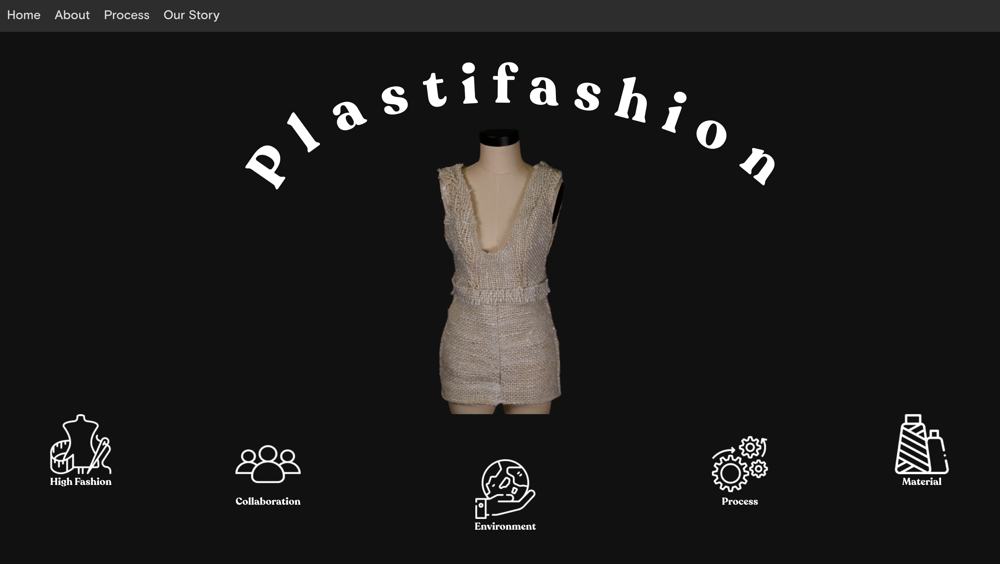

Plastifashion is a year-long project that my group and I focused on developing throughout our final year at CU Boulder. With a passion in material design and sustainability, our final project was centered around creating a high fashion piece completely out of recycled materials that we made on our own. Using recycled plastic gathered from different sources, we developed our own process for converting plastic cups into a usable yarn to weave our own fabric and construct a piece of clothing out of it. Plastifashion aims to create a polished high fashion garment using recycled materials and a website that beautifully documents our process and story.
implementation.As the individual in charge of the technical aspect of Plastifashion, I was solely in charge of creating the website that would come to house essential info about Plastifashion (process, mission statement, etc.). Since this website was primarily going to be visual based, I decided to use React as it was best option for me to build a website with multiple moving parts and was a great opportunity for me to get more practice with React and JSX. To get a good idea for what the website would look like, the team and I brainstormed different themes we wanted to convey through the design and created moodboards in Figma to have a visual cue for it along with layout ideas. After creating more mockups for the layout of Plastifashion's website, I then proceeded to replicate those static mockups in React with hardcoded dummy data. Since this website was being simultaneously developed while we were also developing our own material, I finzalied ideas for the layout and animation of the website early on and would then fill in the pages with correct information as the project advanced. For this website, I wanted to make sure that the website could be viewable on any screen size and strived to avoid hard-coding sizes (instead of just using px and position: absolute for some elements, I would make sure that all elements would use 'em' or 'vw' as a unit and made everything work with flex). I also decided to use GSAP for seamless transitions (primarily seen in the process page) since I wanted extra practice for incorporating different libraries into a React app and thought that it would make information more easy to digest.
 reflection.As my final project of my college career, this was an especially refreshing project that I've gotten to work on during the past 4 years I spent here. As I've buried myself in primarily software based projects during my time here, I wanted my capstone project to be something that I've never explored before, something outside of my comfort zone. When I heard that there was a group focused on material design that needed a front-end expert, I jumped on that opportunity as soon as I could! Being able to coordinate all aspects of the technical portion of this project while also being a part of the material creation process was something that I could only experience once in my life. Being able to show off my own skillset while working on something that I've never experienced in my 4 years at CU Boulder was something I'm truly grateful to have gotten the chance to do! Being chosen as a featured project and being considered for presenting this reasearch at a conference was a great honor and will forever be a project that I take pride in being a part of.
what i learned.Watch this video to see what Plastifashion is!